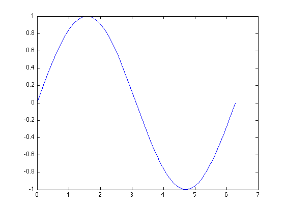
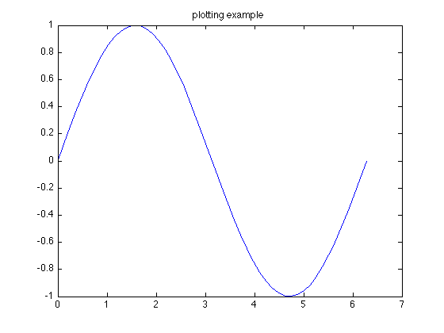
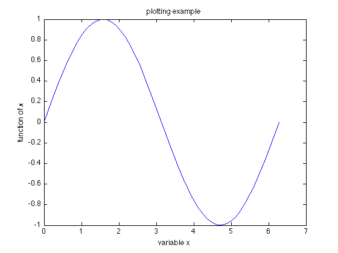
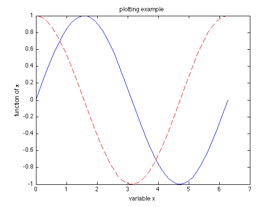
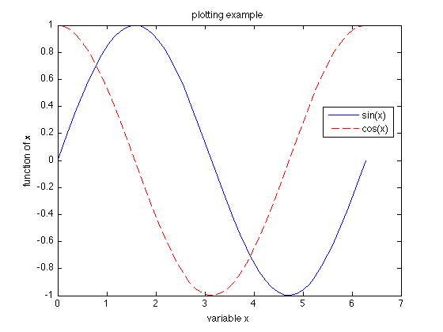

1-D Visualization
In MATLAB, plot is the basic plotting tool. The syntax is plot(x, y), where x and y are vectors of same length which contains the data you want to plot.
Let's try this set of x and y:
x = linspace(0, 2*pi, 50); y = sin(x);
Here, linspace(min, max, N) is a function which creates a vector from min to max containing N linearly spaced points.
Then we can plot the sine function:
plot(x, y)
We can also add title and labels:
title('plotting example');
 xlabel('variable x'); ylabel('function of x');
If we have two data sets to plot in the same figure, use hold:
hold on
Then we can plot another vector vs. x:
y2 = cos(x);
plot(x, y2, 'r--')
 Adding a third parameter to the plot command can change the color and point marker. You can use help to see the options:
help plot
PLOT Linear plot.
PLOT(X,Y) plots vector Y versus vector X. If X or Y is a matrix,
then the vector is plotted versus the rows or columns of the matrix,
whichever line up. If X is a scalar and Y is a vector, disconnected
line objects are created and plotted as discrete points vertically at
X.
PLOT(Y) plots the columns of Y versus their index.
If Y is complex, PLOT(Y) is equivalent to PLOT(real(Y),imag(Y)).
In all other uses of PLOT, the imaginary part is ignored.
Various line types, plot symbols and colors may be obtained with
PLOT(X,Y,S) where S is a character string made from one element
from any or all the following 3 columns:
b blue . point - solid
g green o circle : dotted
r red x x-mark -. dashdot
c cyan + plus -- dashed
m magenta * star (none) no line
y yellow s square
k black d diamond
w white v triangle (down)
^ triangle (up)
< triangle (left)
> triangle (right)
p pentagram
h hexagram
... ...
It's also a good idea to include legend in figures with more than one curve. The syntax is simple:
legend('sin(x)', 'cos(x)', 'Location', 'Best');
Similarly, you can use help to find out more options for 'Location':
help legend
LEGEND Display legend.
... ...
LEGEND(...,'Location',LOC) adds a legend in the specified
location, LOC, with respect to the axes. LOC may be either a
1x4 position vector or one of the following strings:
'North' inside plot box near top
'South' inside bottom
'East' inside right
'West' inside left
'NorthEast' inside top right (default for 2-D plots)
'NorthWest' inside top left
'SouthEast' inside bottom right
'SouthWest' inside bottom left
'NorthOutside' outside plot box near top
'SouthOutside' outside bottom
'EastOutside' outside right
'WestOutside' outside left
'NorthEastOutside' outside top right (default for 3-D plots)
'NorthWestOutside' outside top left
'SouthEastOutside' outside bottom right
'SouthWestOutside' outside bottom left
'Best' least conflict with data in plot
'BestOutside' least unused space outside plot
... ...